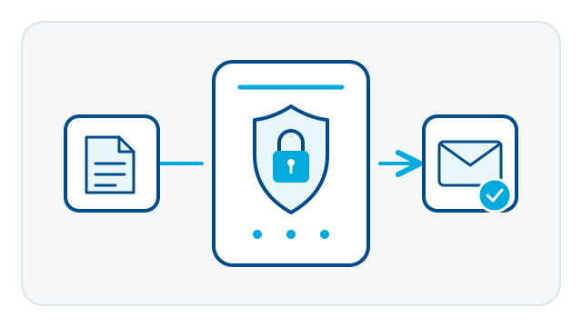
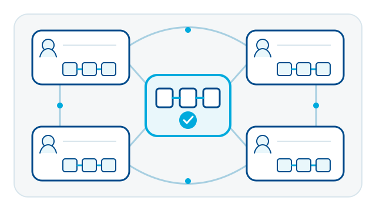
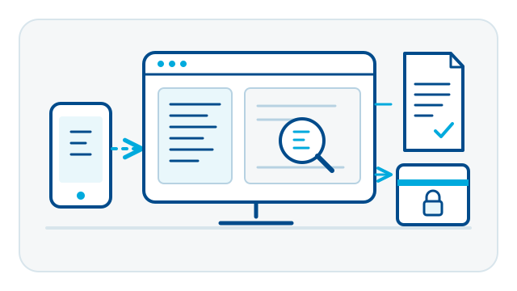
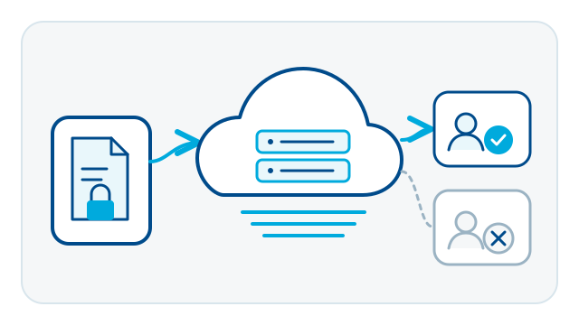

Verifiable Credential Proof Generation and Verification Model for Decentralized SSI-based Credit Scoring Data
KW Cho, BG Jeong, SU Shin · IEICE Transactions on Information and Systems, E104-D(11)

암호 메커니즘과 프로토콜을 바탕으로 정보를 안전하게 보호하는 응용 암호 기술을 연구합니다. 데이터의 저장과 전달 과정에서 필요한 암호화와 인증 방법을 살펴봅니다.

블록체인의 분산원장과 검증 구조를 분석하고, 암호 기술을 적용한 보안·응용 방안을 연구합니다. 여러 참여자가 데이터를 공유하는 환경에서 기록의 신뢰성과 무결성을 확보하는 방법을 살펴봅니다.

디지털 기기와 시스템에 남은 증거를 수집·보존·분석하는 기술을 연구합니다. 증거의 무결성을 유지하면서 분석 결과를 체계적으로 정리하고 보고하는 절차를 살펴봅니다.

클라우드 환경에서 데이터를 안전하게 저장하고 활용하기 위한 보호 기술을 연구합니다. 암호화와 접근 제어를 바탕으로 데이터의 검색·공유 과정에서 필요한 보안 방법을 살펴봅니다.

KW Cho, BG Jeong, SU Shin · IEICE Transactions on Information and Systems, E104-D(11)
KW Cho, MH Jeon, SU Shin · Journal of Digital Convergence, 19(8)
S Noh, SU Shin, KH Rhee · Security and Communication Networks
BG Jeong, TY Youn, NS Jho, SU Shin · Sensors, 20(11)
JS Park, TY Youn, HB Kim, KH Rhee, SU Shin · Sensors, 18(10)